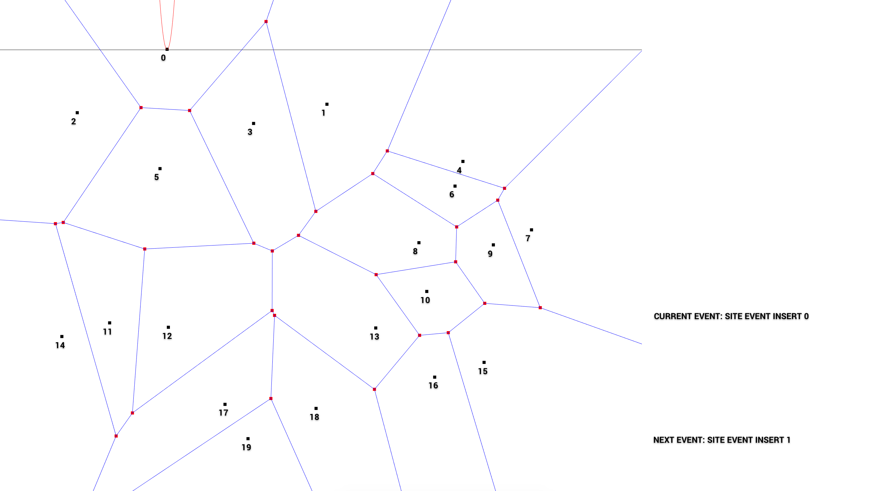
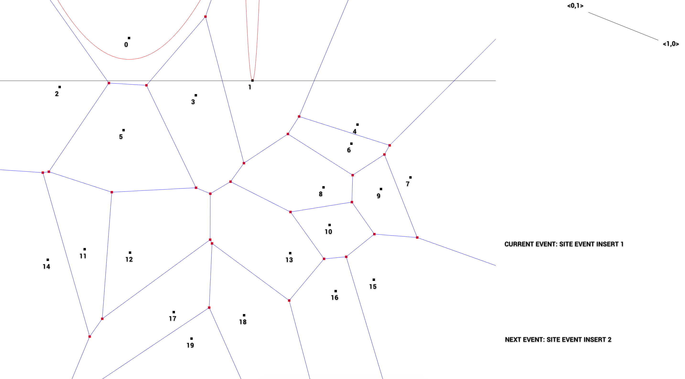
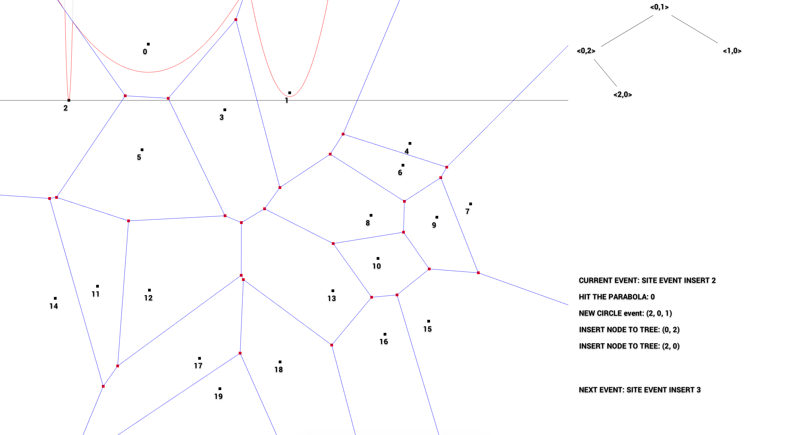
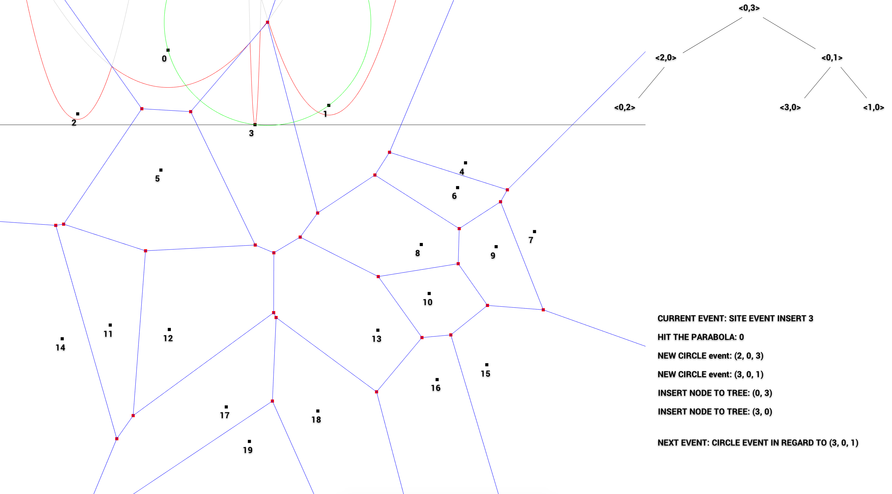
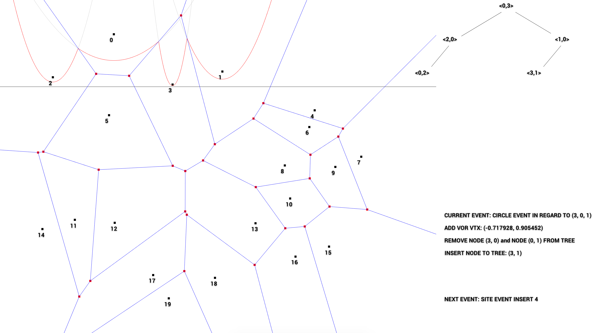
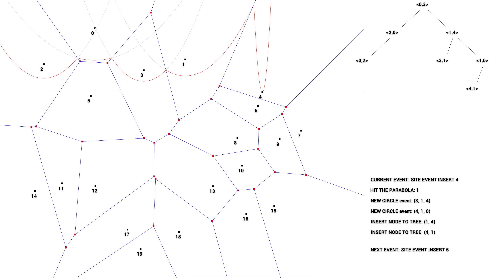
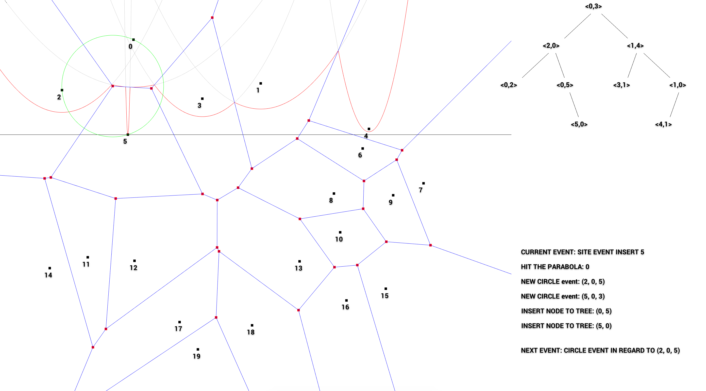

\(\newcommand{\A}{\mat{A}}\)
\(\newcommand{\B}{\mat{B}}\)
\(\newcommand{\C}{\mat{C}}\)
\(\newcommand{\D}{\mat{D}}\)
\(\newcommand{\E}{\mat{E}}\)
\(\newcommand{\F}{\mat{F}}\)
\(\newcommand{\G}{\mat{G}}\)
\(\newcommand{\H}{\mat{H}}\)
\(\newcommand{\I}{\mat{I}}\)
\(\newcommand{\J}{\mat{J}}\)
\(\newcommand{\K}{\mat{K}}\)
\(\newcommand{\L}{\mat{L}}\)
\(\newcommand{\M}{\mat{M}}\)
\(\newcommand{\N}{\mat{N}}\)
\(\newcommand{\One}{\mathbf{1}}\)
\(\newcommand{\P}{\mat{P}}\)
\(\newcommand{\Q}{\mat{Q}}\)
\(\newcommand{\Rot}{\mat{R}}\)
\(\newcommand{\R}{\mathbb{R}}\)
\(\newcommand{\S}{\mathcal{S}}\)
\(\newcommand{\T}{\mat{T}}\)
\(\newcommand{\U}{\mat{U}}\)
\(\newcommand{\V}{\mat{V}}\)
\(\newcommand{\W}{\mat{W}}\)
\(\newcommand{\X}{\mat{X}}\)
\(\newcommand{\Y}{\mat{Y}}\)
\(\newcommand{\argmax}{\mathop{\text{argmax}}}\)
\(\newcommand{\argmin}{\mathop{\text{argmin}}}\)
\(\newcommand{\a}{\vec{a}}\)
\(\newcommand{\b}{\vec{b}}\)
\(\newcommand{\c}{\vec{c}}\)
\(\newcommand{\d}{\vec{d}}\)
\(\newcommand{\e}{\vec{e}}\)
\(\newcommand{\f}{\vec{f}}\)
\(\newcommand{\g}{\vec{g}}\)
\(\newcommand{\mat}[1]{\mathbf{#1}}\)
\(\newcommand{\min}{\mathop{\text{min}}}\)
\(\newcommand{\m}{\vec{m}}\)
\(\newcommand{\n}{\vec{n}}\)
\(\newcommand{\p}{\vec{p}}\)
\(\newcommand{\q}{\vec{q}}\)
\(\newcommand{\r}{\vec{r}}\)
\(\newcommand{\transpose}{{\mathsf T}}\)
\(\newcommand{\tr}[1]{\mathop{\text{tr}}{\left(#1\right)}}\)
\(\newcommand{\s}{\vec{s}}\)
\(\newcommand{\t}{\vec{t}}\)
\(\newcommand{\u}{\vec{u}}\)
\(\newcommand{\vec}[1]{\mathbf{#1}}\)
\(\newcommand{\x}{\vec{x}}\)
\(\newcommand{\y}{\vec{y}}\)
\(\newcommand{\z}{\vec{z}}\)
\(\newcommand{\0}{\vec{0}}\)
\(\renewcommand{\v}{\vec{v}}\)
\(\renewcommand{\hat}[1]{\widehat{#1}}\)
Visualization of the Fortune's Algorithm
A line sweeping algorithm for constructing Voronoi Diagram implemented in C++ combined with OpenGL. Visualizations are created for better understanding of how the algorithm works. My visualization includes:
- Visualization of the Tree structure used for presenting Beachline
- Visualization of the parabolas & beachline.
- Visualization of the circle formed by circle events.
Some other events are presented with the help of plain text.
How To Use
Trackpad: Use your trackpad to scroll the sweepline up/down to see the events at different time steps..
Q: Quit the program.
Platform/Programming Language
Data Structures
This section introduces the main data structures that I defined for the general use in this project. The following classes are defined in Voronoi.h and AVL.h file.
Event
A Event can be either a site event or a circle event. A site event happens when the sweepline reaches a new site that has not yet been reached. A circle happens when the sweepline touch the bottom of the circle where the three associated points lie on. The Event class has a attribute named position that shows where the event actually happens and a integer vector called associate that stores the related points that are associated with this event. For circle event, there are 3 points, and for site event, there is only one.
class Event {
public:
Eigen::Vector2d position;
std::vector associate;
int type;
Event(Eigen::Vector2d p, int s) {
position = p;
associate.push_back(s);
type = 1;
}
Event(Eigen::Vector2d p, int s1, int s2, int s3) {
position = p;
associate.push_back(s1);
associate.push_back(s2);
associate.push_back(s3);
type = 0;
}
};
Voronoi
The Voronoi class is the class that stores all the principle elements of the Voronoi diagram:
- Eigen Matrices of double to store the generated input points
points.
- Eigen Matrices of double to store the computed Voronoi vertices
vor_vtx.
- a Vector of 2x2 Matrix that collects each voronoi edges as a matrix
edges.
- a vector of 3 dimensional vector that collects the parameters for all parabolas
lines_param.
- a vector of 1000x3 dimensional matrix to store the point on all parabolas
lines.
- a priority queue for all Events
event_queue.
class Voronoi {
public:
double sweepline_y;
int sub_div;
// for visualize
Eigen::MatrixXd points; //sites
Eigen::MatrixXd vor_vtx; //sites
std::vector <std::vector <Eigen::Vector2d >> vor_vtx_map; //table
std::vector <Eigen::Matrix2d> edges;
std::vector <std::vector <Eigen::Vector3d >> open_edges;
std::vector < Eigen::Vector3d> lines_param; //Parameters
std::vector < Eigen::MatrixXd> lines; //sampled points on line
Eigen::MatrixXd beach_line;
Eigen::MatrixXd data;
// for compute
std::priority_queue < Event, std::vector < Event >, PQ_comparator> event_queue;
Voronoi(int n);
Eigen::Vector2d generate_point();
Eigen::MatrixXd interpolate_line(double start, double end, double a, double b, double c);
void update_lines_param();
void update_lines_points();
void update_data(double yoffset, Eigen::MatrixXd tree_edges);
void extend_open_edges();
};
Node
This class represents the nodes of the AVL tree used for beachline. Each node contains a height and a two dimensional integer vector break_point as attributes. The break point [0,1] stand for the intersection between the parabola number 0 and the parabola number 1, where 0 is to the left of the intersection and 1 is to the right. A node also has a pointer to its left and a pointer to its right child.
class node{
public:
int height;
Eigen::Vector2i break_point;
node* left;
node* right;
node (Eigen::Vector2i bp) {
height = 1;
break_point = bp;
left = NULL;
right = NULL;
}
};
AVL
The last one will be the class of AVL tree. An AVL tree is initialized with the entire voronoi diagram, so that the graph data can be accessed within the class. When making query within the tree, the key value of each node are determined by computing the corresponding intersection, which requires access to the points data and current sweepline location.
class AVL{
public:
node* root = NULL;
Eigen::MatrixXd points;
double sweepline_y;
std::vector tree_rep;
std::vector msg;
AVL(Voronoi* diagram) {
points = diagram->points;
Eigen::Vector3d new_point = points.row(1);
sweepline_y = new_point(1);
Eigen::Vector3d arc_params = get_line_params(0);
double pa = arc_params(0);
double pb = arc_params(1);
double pc = arc_params(2);
double intersect_y = pa*new_point(0)*new_point(0) + pb*new_point(0) + pc;
diagram->open_edges[0][1] = Eigen::Vector3d(new_point(0), intersect_y, 1);
diagram->open_edges[1][0] = Eigen::Vector3d(new_point(0), intersect_y, 1);
}
...
};
Example
Before any event happens. The first event to meet is the site event of site 1.

Next, our sweepline hits site 1. The new parabola will intersect with parabola 0 in all cases.

We hit site 2. The arc that is vertically above the new parabola is parabola 0. node (0, 2) and (2, 0) are being inserted to our AVL tree as two new break points are created by this site event. We also need to check if the new site forms new circle events with its neighbours. In this case, circle event (2, 0, 1) are found and will be inserted to our priority queue.

We insert site 3. Again, two new nodes (0, 3) and (3, 0) will be inserted to our AVL tree. This time the new site is not to the left of all other sites, so two new circle events (2, 0, 3) and (3, 0, 1) will be added to the queue. After the site being inserted, we will be hitting a circle event (3, 0, 1) next.

The circel event (3, 0, 1) is hitted and a new Voronoi vertex is added. This will remove the nodes (3, 0) and (0, 1) and replace with a new node (3, 1).

Insert site 4.

Insert site 5.

How To Run?
cd voronoi
mkdir build
cd build
cmake -DCMAKE_BUILD_TYPE=Release ../
make
./nanogui_test